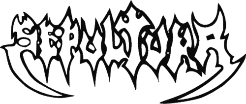
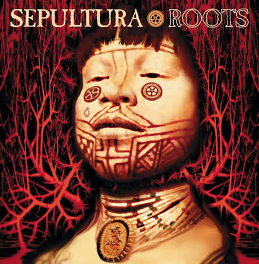
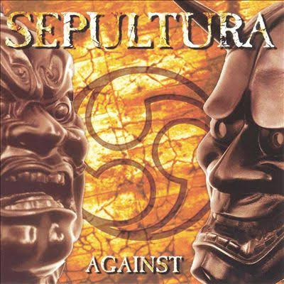

A Sepultura zenekar
A Sepultura egy brazil heavy metal zenekar Belo Horizonte-ból, melyet 1984-ben alapított Max és Igor Cavalera testvérek. A zenekar meghatározó alakja volt a groove metal, a thrash metal és a death metal műfajoknak az 1980-as évek végén és az 1990-es évek elején, és szerves részét képezte a deathrash hangzásvilágának is. Stílusuk az évek során sokat változott, a zenekar hangzását az alternatív metal, a világzene, a nu metal, a progresszív rock, a hardcore punk és az industrial metal hatásaival és textúráival ötvözte. A Sepulturát a thrash metal második hullámának is tekintik, amely az 1980-as évek végétől az 1990-es évek elejéig-közepéig tartott.
A Sepultura eddig tizenöt stúdióalbumot adott ki. A zenekar 1986-ban adta ki debütáló albumát, a Morbid Visionst , majd egy évvel később a Schizophrenia- t. Ez utóbbi album felkeltette a Roadrunner Records figyelmét, akik 1988-ban szerződtették le a Sepulturát. Harmadik albumuk, és egyben a Roadrunner debütáló albumuk, a Beneath the Remains (1989) volt a zenekar nemzetközi áttörése. A következő három album – az Arise (1991), a Chaos AD (1993) és a Roots (1996) – megszilárdította a Sepultura hírnevét, mint az 1990-es évek egyik legsikeresebb heavy metal zenekara. A zenekar több mint hárommillió lemezt adott el az Egyesült Államokban, és közel 20 milliót világszerte, és számos arany- és platinalemezt szerzett világszerte, többek között Franciaországban, Ausztráliában, Indonéziában, az Egyesült Államokban, az Egyesült Királyságban, Cipruson, és szülőhazájukban, Brazíliában.
A Sepultura számos tagsági változáson ment keresztül az elmúlt években.42 éves karrier. Max és Igor Cavalera 1996-ban, illetve 2006-ban távoztak. "Klasszikus" felállásuk, amely közel egy évtizedig tartott, Maxból, Igorból, Paulo Jr. basszusgitárosból és Andreas Kisser gitárosból állt . Igor 2006-os távozása óta nem maradtak eredeti tagok a zenekarban. Bár Paulo Jr. csatlakozott a Sepulturahoz röviddel az 1984 végén történt megalakulása után, és ő a leghosszabb ideje tag, a Chaos AD-ig egyetlen stúdióalbumukon sem lépett fel. Kisser, aki Jairo Guedz korábbi gitárosát váltotta , a Schizophrenia óta minden Sepultura albumon szerepelt . Basszusgitárosként is fellépett a Chaos AD-ig. Jelenlegi felállásukban Paulo Jr., Kisser, Derrick Green frontember (aki 1997-ben váltotta Maxot) és Greyson Nekrutman dobos játszik . 2024 márciusában, több mint négy évtizednyi működés után a zenekar egy kétéves búcsúturnéra indult, amely után feloszlanak; egy EP, a The Cloud of Unknowing (2026) jelent meg a turné utolsó évével egy időben.

Történelme
Alakulás, Bestial Devastation és a Morbid Visions (1984–1986)
A Sepultura zenekart 1984-ben alapította Belo Horizontéban Max és Igor Cavalera testvérek, Vânia modell és a tehetős olasz diplomata, Graciliano fiai, akinek halála anyagilag tönkretettea családot. Graciliano halála mélyen érintette fiait, és arra inspirálta őket,hogy zenekart alapítsanak, miután Max még aznap meghallotta a Black Sabbath 1972-es Vol. 4 című albumát. A Sepultura nevet, ami portugálul sírt jelent, akkor választották, amikor Max lefordította a Motörhead "Dancing on Your Grave" című dalának szövegét. A testvérek korábban egy feldolgozászenekarban játszottak.
Hatással voltak rájuk olyan brazil metal zenekarok is, mint a Stress , a Sagrado Inferno és a Dorsal Atlântica. 1984-re otthagyták az iskolát. Több korai tagcsere után a Sepultura stabil felállást hozott létre Max gitárosból, Igor dobosból, Wagner Lamounier énekesből és Paulo Jr. basszusgitárosból. Lamounier 1985 márciusában távozott, és az úttörő brazil black metal zenekar, a Sarcófago vezetője lett. Max vette át az éneklési feladatokat, Jairo Guedz pedig csatlakozott a zenekarhoz szólógitárosként.
Egy évnyi fellépés után a Sepultura 1985-ben leszerződött a Cogumelo Recordshoz. Még ugyanebben az évben kiadták a Bestial Devastation című megosztott EP-t a brazil Overdose zenekarral. A felvételek és a producerek mindössze két nap alatt elkészültek. A zenekar 1986 augusztusában vette fel első nagylemezét, a Morbid Visionst . Az album novemberben jelent meg, és tartalmazta a "Troops of Doom" című számot, amely némi médiafigyelmet kapott. A zenekar São Paulóba költözött.

Felemelkedés
A roadrunneres bemutatkozásra készülve a Beneath the Remains album produkciós munkálataiba bevonták az ismert death metal producer Scott Burnst is. Scott Burns addigra olyan albumokkal szerzett nevet magának, mint például a Death első két anyaga (Scream Bloody Gore és Leprosy) vagy később az Obituary, a Deicide, a Cannibal Corpse albumai és további Death-lemezek. Burns megtette azt a szívességet a Sepulturának, hogy hajlandó volt karácsonykor Rio de Janeiróba utazni, és irányítani a felvételi munkálatokat, majd januárban már az Államokban megkeverni és masterelni az anyagot.
A Beneath the Remains a thrash metal éra csúcsán jelent meg. A Sepultura jókor volt jó helyen, így a tehetségüket sikerült megmutatni a világnak. A 42 perces anyag intenzív, gyilkos lendülettel előadott klasszikus thrash metal. Az Inner Self, a Stronger Than Hate vagy a Mass Hypnosis dalok tekinthetők csúcspontoknak. Igor dobolását többen a Slayer ászához, Dave Lombardóhoz hasonlították joggal, már ekkor. Az anyagon néhány vendég is felbukkan. A Stronger Than Hate kórusában például olyan nevek hallatják hangjukat az akkori színtérről, mint Kelly Shaefer (Atheist), John Tardy (Obituary) valamint Scott Latour és Francis Howard a death metalt játszó Incubusból.
A Beneath the Remains 1989. májusi megjelenését követően első külföldi turnéjára indult a Sepultura. A Sodom előzenekaraként bejárták Európát (gyakorlatilag minden este lealázták a német thrashereket azzal a hihetetlen energiával, ami belőlük áradt), majd az USA és Mexikó következett, játszottak a Motörhead és a Metallica előtt. A sikeren felbuzdulva a Roadrunner 1990-ben újra megjelentette a Schizophrenia lemezt, most már nemzetközi terítéssel, és ehhez a kiadáshoz a Sepu rögzítette a Troops Of Doom egy friss verzióját bónusz dalként.
Gyakorlatilag épp csak annyi időre állt meg a zenekar, hogy a srácok végleg átköltözzenek az Egyesült Államokba, Phoenixbe, majd felvegyék a következő nagylemezt a Morrissound stúdióban, természetesen ismét Scott Burns segítségével. A borítóra újból egy kifejező Michael Whelan-festményt választottak.
Az Arise album még erősebb, mint a Beneath the Remains. Talán a hangzás, talán a több középtempós riff miatt, de súlyosabbnak hat, mint elődje. A dalok is komplexebbek, technikásabbak, mint korábban. Elkészítik első videóklipjeiket a Dead Embryonic Cells és az Arise dalokra, ez utóbbit azonban negatív üzenete miatt Amerikában letiltotta az MTV.
Az Arise 1991-ben szinte egy időben jelent meg az akkor második alkalommal megrendezett Rock in Rio fesztivállal, melyre a Sepulturát is meghívták egyik főzenekarnak. (Egy Rock in Rio Edition is megjelent a lemezből más borítóval, és ismét a Troops Of Doom bónusszal.) A következő nagy dobás a São Paulóban adott ingyenes szabadtéri koncertjük volt, ahol több mint 40 000 ember előtt játszottak. Sajnos a hisztérikus tömegben egy rajongót megkéseltek és életét vesztette, ami nem tett jót a Sepultura hazai megítélésének.
Az Arise platinalemezzé érett az elsöprően sikeres világ körüli turné hatására, mellyel először jutottak el a Távol-Keletre, Japánba, Indonéziába, Ausztráliába és játszottak a hollandiai Dynamo fesztiválon is. A márciusi barcelonai koncert videófelvétele a következő évben kerül a boltokba Under Siege címmel. Max Cavalera közben feleségül vette a nála majd' húsz évvel idősebb Gloria Bujnowskit, a csapat menedzserét. Ez a házasság a Sepultura történetének későbbi alakulása szempontjából is fontos esemény volt.

Zenei kísérletek
Az Arise volt az utolsó tisztán csak metalhatású lemez a Sepultura történetében. Az 1993-as Chaos A.D. albumtól kezdve folyamatosan kísérleteztek újabb hatások érvényesítésével. A Chaos A.D. anyagon ilyen volt a hardcore megjelenése. Az olyan hc/thrash ostorcsapások, mint a Refuse/Resist, a Slave New World, vagy a Biotech is Godzilla egyértelműen jelzik, hogy a Sepultura új utakra lépett. A Clenched Fist című dalba industrial hatások szivárogtak be. Az akusztikus gitárra és dobokra hangszerelt Kaiowas dalban dél-amerikai törzsi motívumok ütik fel fejüket. Ráadásnak pedig a New Model Army egyik punkosan egyszerű nótáját (The Hunt) is feljátszották a lemezre. A korábbi "sátán-halál-vér" klisék eltűntek a szövegekből, és inkább politikai és társadalmi kérdéseket feszegetnek a dalok. Az első kislemez, a Territory klipjét a dal témájával tökéletes összhangban lévő helyszínen, Izraelben forgatták. A lemezmegjelenést követően a Sepultura egy éven keresztül turnézott szerte a nagyvilágban. A koncertsorozat csúcspontját a doningtoni Monsters Of Rock fellépés jelentette.
1994-ben Max Cavalera összehozott egy Nailbomb nevű projektet a Fudge Tunnel-es Alex Newporttal, amiben industrial hatásokkal kevert hardcore-metalt játszottak. A projekt egyetlen (jórészt dobgéppel rögzített) stúdiólemezén, a Point Blanken, Andreas Kisser és Igor Cavalera is vendégszerepel a Sepuból, valamint Dino Cazares az akkori Fear Factoryból.
1995-ben a Chaos A.D. turné fáradalmait pihente ki a Sepultura. Ekkor jelent meg második videójuk, a koncert és promo klipekből, interjúkból álló Third World Chaos. Andreas Kisser megint Jason Newsteddel (akkor Metallica) múlatta az időt, ugyanúgy, mint három évvel korábban. A Sepultallica most kiegészült az Exodusból Tom Hunting dobossal, és így jött létre az alkalmi Sexoturica társulat, amely egy split EP-t is kiadott a Newsted-Hunting-Devin Townsend felállású IR8 projekttel közösen.
1996-ban jelent meg a Roots, a Sepultura hatodik albuma. Ezen a lemezen minden korábbinál nagyobb teret engednek a brazil zenei gyökerek érvényesülésének. Sok dalban autentikus dél-amerikai népi hangszerek szólalnak meg, felbukkan a lemezen Carlinhos Brown brazil ritmuskirály, sőt a Kaiowas folytatásában, az Itsáriban egy komplett indián törzs is szerephez jut. A nóták minden eddiginél groove-központúbbak, bár az előző lemezre utaló rövid hardcore-mozzanatok sem hiányoznak. A mélyre hangolt gitárok a rossz nyelvek szerint a Korn hangzásának koppintása. A Lookaway nótában maga Jonathan Davis is szerepel, Mike Patton és DJ Lethal társaságában. A lemezhez kapcsolódva megjelent egy We Are What We Are című rövid videóanyag is három friss klippel (Roots Bloody Roots, Ratamahatta, Attitude), interjúrészletekkel.
A megalakulás óta eltelt 13 évben messzire jutott zeneileg a Sepultura, az egyik leginnovatívabb együttessé nőtte ki magát a 90-es évek derekára. A Sepultura megkerülhetetlenné vált, de ezzel együtt most már volt veszítenivalójuk is.
Káosz és újrakezdések

A Roots turné keretében a Sepultura ismét meghívást kap a Monsters Of Rock fesztiválra, de végül trió felállásban kénytelenek játszani, mert Max Cavalera fogadott fia néhány órával a fellépés előtt autóbalesetben életét veszti, Max és Gloria pedig az első géppel azonnal hazautaznak. Röviddel a temetés után folytatódik a turné. Időközben az együttes többsége úgy határoz, hogy nem kívánják megújítani a menedzser lejáró szerződését. Gloria kirúgását férje, az amúgy is rossz passzban lévő Max Cavalera, nem tudja elfogadni. Mivel a másik három taggal nem tudnak közös nevezőre jutni, a gitáros-énekes-alapító úgy dönt, hogy kilép a Sepulturából, és a még hátralévő bulikat törlik. (A klasszikus felállású Sepultura legutolsó koncertje az angliai Brixton Academyben volt 1996. december 16-án. Ennek a bulinak a felvételét rejti a 2002-ben megjelent Under The Pale Grey Sky koncertlemez.)
A válás nem fájdalommentes. A két sértődött fél hónapokon keresztül üzenget egymásnak a sajtón keresztül. A rajongók pedig kétségbeesetten figyelik, ahogy kedvenc együttesük egy pillanat alatt atomjaira hullik szét és a Sepultura jövője több mint kétségessé válik. Max Cavalera lép tovább hamarabb. Megalakítja Soulfly nevű együttesét, és szerződést köt korábbi csapata kiadójával a Roadrunnerrel. Az együttes nevét viselő első Soulfly lemez 1998 áprilisában jelenik meg. A zene egyértelműen a Roots világának továbbvitele, ha lehet még több törzsi motívummal, és még több nu metal attitűddel.
A Sepultura magára maradt három zenésze úgy dönt, hogy nem adják fel, és a vezér nélkül is folytatják. Az első próbákon még Andreas énekel, de hamar belátják, hogy új frontembert kell keríteniük. A választásuk Derrick Greenre, egy két méter magas, clevelandi születésű fekete srácra esett, aki addig az Outface és az Alpha Jerk hardcore-zenekarokban fordult meg. Az új felállású Sepultura első lemeze 1998 októberében lát napvilágot, de a fogadtatása elég hűvös. A rajongótábor megosztott, így a lemezeladások értelemszerűen visszaesnek, meg sem közelítik a korábbi lemezek mutatóit. A Soulfly bemutatkozó albuma kétszer annyi példányban kelt el, mint az új frontemberrel készült Against.
Pedig a fiúk mindent bevetettek. Visszakanyarodtak a Chaos A.D. hardcore-ral vadított világához, a hangzásban a gitár mellé emelték a basszusgitárt. Derrick hangja az üvöltéseknél kísértetiesen hasonlít Maxhoz, viszont az új frontember énekdallamokkal is próbálkozik. A Kamaitachi dalban tradicionális japán dobosok (a Kodo ütősei) tűnnek fel, a Hatred Aside pedig a Sepu és Jason Newsted közös szerzeménye, amelybe a Metallica akkori basszusgitárosa is beszállt egy kis üvöltözésre. Az Against az elődeihez képest nem annyira masszív, egységes lemez. Sokkal inkább az útkeresés és a bizonytalanság érződik rajta.

Túlélés
Viszonylag sok idő, majdnem egy év telik el addig, amíg elindul az Against turné, és ez újabb bizonytalanságot szül a rajongók között. Eközben a megújult együttes kaliforniai klubokban melegít (Troops Of Doom néven), hogy aztán elsőként a brazíliai Noise Against Hunger jótékonysági fesztiválon 1999. augusztus 15-én mindenkinek megmutathassák: a Sepultura él. A színpadon egymás után tűntek fel a négyes mellett a Sepultura barátai: Mike Patton, Jason Newsted, Carlinhos Brown, vagy a régi harcostárs Jairo. Még a Xavantes törzs tagjai is eljöttek erdei kunyhóikból São Paulo sokkoló betondzsungelébe a koncert kedvéért.
Közel egy éven keresztül zajlott az Against Tour, ahol először léptek fel estéről estére a Slayer vendégeként. A turné végeztével gyakorlatilag rögtön nekiláttak egy új album megírásának. A stúdiómunkálatok 2000 őszén kezdődtek és az album a következő év tavaszán jelent meg. A Nation konceptlemez, mely egy olyan világ/nemzet megteremtéséről vizionál, ahol a korrupció felszámolásával, egymás kölcsönös megbecsülésével jobb életet élhetnének az emberek. Mindezt az eddigi legszélesebb zenei eszköztárral mutatják be.
A lemez befogadása viszont nem könnyű feladat, legalábbis a régi Sepu-fanoknak biztosan nem az. Minden korábbinál több a belassult pillanat és Derrick is jóval több tiszta dallamot énekel. A mondanivaló erősítésére a dalok között idézetek hallhatók: Gandhi, Albert Einstein, a 14. dalai láma és kalkuttai Teréz anya filozofikus gondolatai. A feszes riffeléshez szokott hallgató figyelme könnyen elkalandozik. Egybehangzó vélemények szerint a lemez legjobb dala a finn Apocalypticával közösen írt és előadott Valtio, ami tulajdonképpen a lemeznyitó Sepulnation egy átirata.
Még januárban a Nation megjelenése előtt fellépnek a harmadszor megrendezett Rock in Rio fesztiválon, majd tavasszal indul a szokásos világ körüli turné. A Nation lemezzel a Sepultura kitöltötte szerződését a Roadrunnernél. 2002 szeptemberében búcsúzóul a Roadrunner kiadja a klasszikus felállás utolsó koncertjét dupla cédén. Nem sokkal utána pedig a zenekar addigi három VHS anyaga jön ki a Chaos DVD-n, szintén a nagy időkre emlékezve. Az aktuális felállás válaszul a Revolusongs feldolgozás mini-albummal jelentkezik az év végén, igaz csak Brazíliában és Ázsiában kapható az anyag. Közben nekilátnak a következő nagylemez megírásának és felvételeinek is, melyet új kiadó, a német SPV gondoz.
Pozitív düh
A második generációs Sepultura-albumok közül a Roorback sikerült eddig a legjobban. A 2003 derekán megjelent anyagon nincsenek vendégzenészek, nincsenek vadhajtások, nincsenek zenei kísérletezések.
2003 márciusától kezdve gyakorlatilag két éven át folyamatosan turnén volt az együttes. Néhány bemelegítő brazil buli után főzenekarként nyomultak Európában, majd következett az Egyesült Államok a Voivoddal közösen. A nyári fesztiválokra visszatértek az öreg kontinensre, ahol a Wanted Fesztivál keretében először játszott Magyarországon a Derrick Green vezette Sepultura. 2004 karácsonyáig mind a négy égtájat bejárta a zenekar. Az április 3-i koncertjüket São Paulóban filmre vették, azzal a szándékkal, hogy később DVD formájában kiadhassák 20 éves fennállásuk tiszteletére.